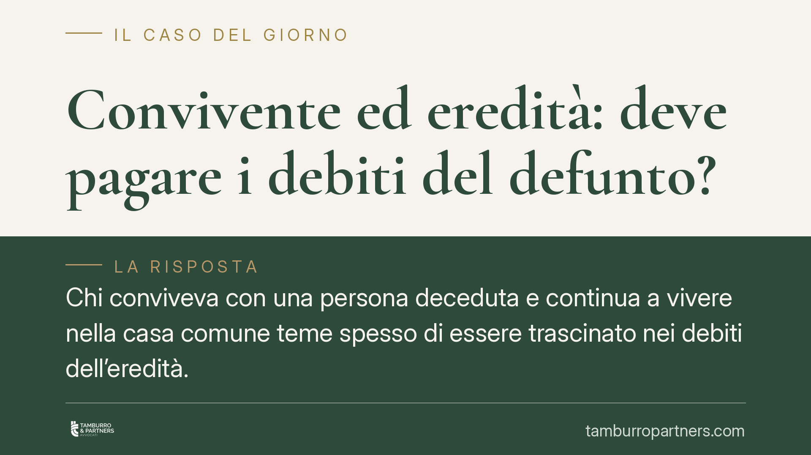

Convivente ed eredità: deve pagare i debiti del defunto?
Chi conviveva con una persona deceduta e continua a vivere nella casa comune teme spesso di essere trascinato nei debiti dell'eredità. La distinzione tra possessore e semplice detentore dei beni è decisiva: incide sui termini per decidere e sulla posizione verso i creditori. Vediamo cosa prevede il codice civile e come muoversi senza compiere atti che equivalgono ad accettazione.

Il problema: restare in casa significa accettare l'eredità?
Quando muore una persona, chi condivideva con lei l'abitazione si trova spesso a continuare a viverci. Da qui il timore ricorrente: questa permanenza vale come accettazione dell'eredità e, quindi, espone ai debiti del defunto?
La risposta richiede una premessa tecnica. Il codice civile tratta in modo diverso chi *possiede* i beni ereditari e chi li *detiene*. Il possessore si comporta come titolare del bene; il detentore (o l'ospite) utilizza il bene riconoscendo che appartiene ad altri. La distinzione non è teorica: cambia i termini entro cui occorre decidere se accettare o rinunciare.
Inquadramento normativo
L'art. 485 del codice civile riguarda il chiamato all'eredità che si trova nel possesso dei beni ereditari. Costui deve redigere l'inventario entro tre mesi dall'apertura della successione (o dalla notizia della devoluta eredità). Se non lo fa, è considerato erede puro e semplice: risponde cioè dei debiti del defunto anche con il proprio patrimonio.
Compiuto l'inventario nei termini, il chiamato dispone di ulteriori quaranta giorni per deliberare, cioè per scegliere se accettare con beneficio d'inventario oppure rinunciare. Si tratta di un passaggio spesso trascurato ma essenziale: l'inventario non chiude la partita, apre una seconda finestra decisionale.
Diversa è la posizione del chiamato che non possiede i beni. Per lui opera l'art. 480 c.c., che fissa in dieci anni il termine per accettare l'eredità. Entro tale arco può valutare con calma, purché non compia atti che integrino accettazione tacita.
Qui si innesta la figura del convivente. Se la giurisprudenza lo qualifica come mero detentore o ospite dei beni – perché non li possiede come proprietario, ma li utilizza in quanto vi abitava con il defunto – non ricade nel rigido termine trimestrale dell'art. 485 c.c. La semplice permanenza nell'immobile, di per sé, non equivale ad accettazione.
Va tenuto distinto, infine, il profilo della convivenza di fatto disciplinata dalla L. 76/2016. L'art. 1, commi 42-43, riconosce al convivente superstite un diritto di abitazione sulla casa comune, temporaneo e limitato nel tempo. È un diritto proprio, che nulla ha a che vedere con la vocazione successoria: la convivenza di fatto, da sola, non attribuisce la qualità di erede né diritti ereditari.
Implicazioni pratiche
Il punto delicato è l'accettazione tacita (art. 476 c.c.): si verifica quando il chiamato compie un atto che presuppone necessariamente la volontà di accettare e che non avrebbe diritto di compiere se non come erede.
Alcuni comportamenti sono rischiosi. Vendere o donare beni del defunto, incassare crediti ereditari, pagare debiti con denaro dell'eredità, riscuotere somme sui conti del defunto, promuovere azioni giudiziarie a tutela del patrimonio ereditario: sono tutti atti che possono essere letti come accettazione.
Altri comportamenti, invece, sono generalmente neutri: continuare ad abitare la casa, provvedere alla conservazione dei beni, pagare le spese correnti con risorse proprie, organizzare il funerale.
Per il convivente ciò significa che la permanenza nell'immobile non lo trasforma automaticamente in erede. Ma ogni atto dispositivo sui beni del defunto va valutato con attenzione, perché può cambiare radicalmente la sua posizione verso i creditori.
Cosa fare in concreto
- Verificate la vostra qualifica: stabilite se siete chiamati all'eredità e se vi trovate nel possesso o nella mera detenzione dei beni. Da questo dipendono i termini applicabili.
- Non toccate il patrimonio ereditario: evitate di vendere, incassare, trasferire o utilizzare beni e denaro del defunto fino a quando non avete deciso.
- Fate l'inventario se siete nel possesso dei beni: rispettate il termine di tre mesi e ricordate i successivi quaranta giorni per deliberare.
- Distinguete i vostri diritti: il diritto di abitazione del convivente di fatto (L. 76/2016) è cosa diversa dall'eredità; non confondete i due piani.
- Documentate le spese personali: conservate le ricevute delle somme anticipate con denaro proprio, utili a dimostrare che non avete attinto all'eredità.
È opportuno rivolgersi a un professionista quando l'eredità presenta debiti, beni di valore o situazioni familiari complesse, prima di compiere qualsiasi atto che possa essere interpretato come accettazione.
Contributo informativo a cura di Tamburro & Partners - Avv. Giuseppe Tamburro. Non costituisce parere legale.
Ogni famiglia ha il suo equilibrio.
Separazione, divorzio, affidamento, assegno: se vuoi un confronto riservato su una specifica situazione, scrivi allo studio. Ti rispondiamo entro un giorno lavorativo.